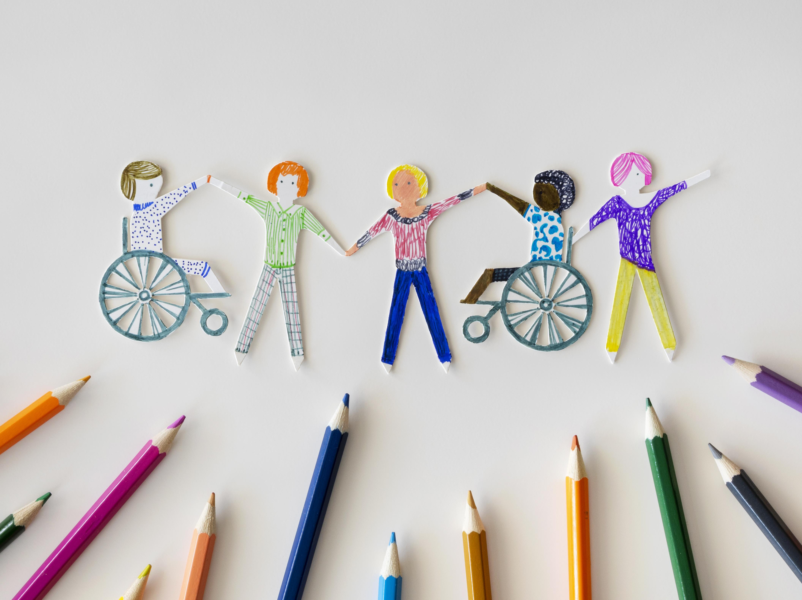

Educação
Pessoas com deficiência intelectual enfrentam barreiras significativas na educação, como a falta de materiais adaptados e de professores capacitados para compreender suas necessidades específicas. A inclusão escolar é frequentemente desafiada pela ausência de suporte individualizado.

Desafios Tecnológicos
Muitos recursos tecnológicos não são acessíveis para pessoas com deficiência intelectual. Interfaces complexas e a falta de personalização dificultam o uso de ferramentas digitais que poderiam auxiliá-las no aprendizado e no dia a dia.

Desafios Cognitivos
Limitações na memória, concentração e habilidades de resolução de problemas são barreiras comuns. Essas dificuldades podem impactar a autonomia e a capacidade de realizar atividades diárias ou acompanhar o ritmo de tarefas escolares e profissionais.

Mercado de Trabalho
A inserção no mercado de trabalho é um desafio devido ao preconceito e à falta de compreensão sobre como adaptar funções para pessoas com deficiência intelectual. Programas de inclusão ainda são escassos, e oportunidades são limitadas.
